Chapter 4 Data
Download link for Exercise 2 and the relevant Data: exercise 2
Download link for Answers to Exercise 2: solutions exercise 2
4.1 Types of Data
We have so far seen the following types of Data: Integer, Double, Character, and Logical. These can be organized as follows:
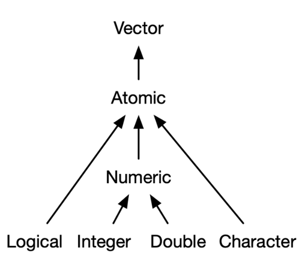
A special type of Integer is the Factor. A factor is a vector of values. The values refer to some category, the “levels”. For example:
gender <- factor(c("Male", "Female", "Female", "Female", "Male"),
levels = c("Male", "Female"))
gender## [1] Male Female Female Female Male
## Levels: Male FemaleJust like any other type of vector, a factor can be indexed in the same way:
## [1] Female
## Levels: Male Female## [1] Male Female Female
## Levels: Male FemaleYou can see the possible categories of the factor by using the levels() function:
## [1] "Male" "Female"You can also change the categories of the factor values by using the levels() function:
## [1] Harry Sally Sally Sally Harry
## Levels: Harry SallyUnder the hood, a factor is a vector of integers. Each integer number is then associated with a name (like Harry or Sally, or Male or Female), which is displayed as the output of the factor.
We can see the underlying numerical structure by using the as.numeric() function:
## [1] 1 2 2 2 14.1.1 Scalars, Vectors, & Matrices
4.1.1.1 Scalars
The most basic type of data is the scalar. Scalars hold one value at a time. We can use scalars as the building blocks for more complex data types. Effectively, a scalar is a vector of length 1. Examples of scalars:
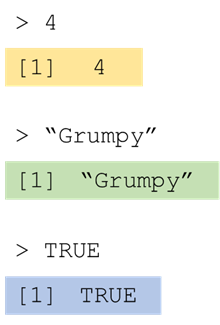
4.1.1.2 Vectors
The next type of data is the vector. A vector holds multiple values at the same time, but consists of only one dimension. We have already encountered atomic vectors throughout the previous module. When we discuss vectors throughout these modules we are referring to atomic vectors, meaning all elements in the vector are of the same data type. Examples of vectors:
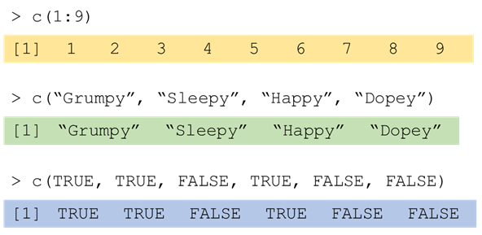
4.1.1.3 Matrices
A matrix is an extension of the atomic vector. This means that every element in a matrix has to be of the same type. It functions similarly to a vector, only that each element in the matrix is organized along two dimensions. Example of a matrix:
## [,1] [,2] [,3]
## [1,] 1 4 7
## [2,] 2 5 8
## [3,] 3 6 9Because a matrix is organised along two dimensions, you have to index it along both dimensions.
Indexing a matrix is done by indicating the row & column in the following way:
my_matrix[row_nr, col_nr]
## [1] 1 4 7## [1] 1 2 3## [,1] [,2]
## [1,] 1 4
## [2,] 2 5
## [3,] 3 6## [1] 7## [1] 34.1.2 Lists & Data frames
4.1.2.1 Lists
So far, we have only looked at Atomic data. Atomic data requires all elements in it to be of the same type. The other category of data is List data. In Lists elements can be of different types. Here is an example:
## [[1]]
## [1] 1 2 3
##
## [[2]]
## [1] "a"
##
## [[3]]
## [1] TRUE FALSE TRUE
##
## [[4]]
## [1] 2.3 5.9You add elements to a list by creating objects as you would any other object and separating them by a ,. These objects can be of any type or length.
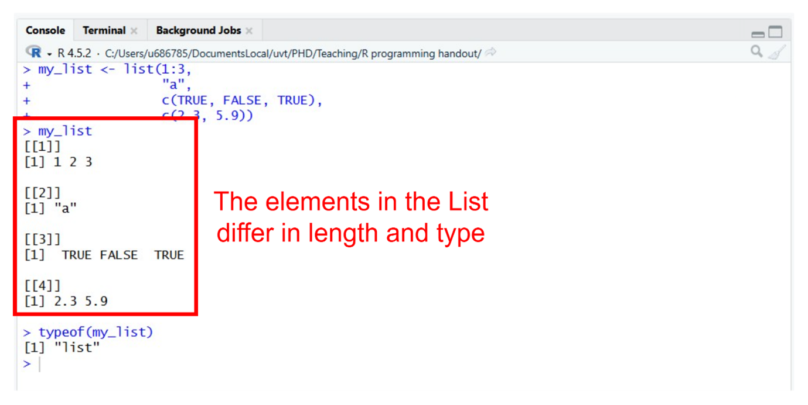
4.1.2.2 Data frames
Data framesare a special type of list consisting entirely of named vectors, where every element within the list must be of the same length. Additionally, because it is made up of vectors, every element within each of these vectors must be of the same type.
Data frames are similar to the datasets you are used to with rows and columns. A data frame is constructed using the data.frame() function. Data frames are created similarly to lists. Usually when we construct a data frame, we name the vectors we add as elements in the following way:
StarWars <- data.frame(name = c("Luke", "C-3PO", "R2-D2", "Darth Vader", "Leia"),
height = c(172, 167, 96, 202, 150))
StarWars## name height
## 1 Luke 172
## 2 C-3PO 167
## 3 R2-D2 96
## 4 Darth Vader 202
## 5 Leia 150The vectors added as elements into the data frame form the columns of the data frame. The rows are the values for each column at a particular horizontal index
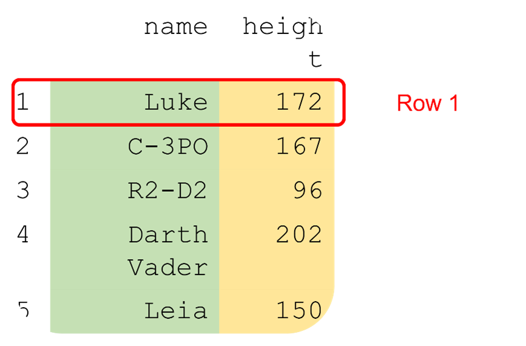
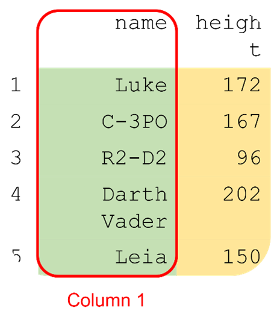
You can index a data frame in the same as a matrix:
my_data_frame[row_nr, col_nr]
## [1] "C-3PO"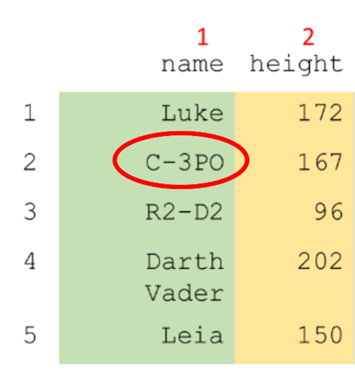
You can also index columns using the $ sign, like: my_data_frame$variable
## [1] 172 167 96 202 150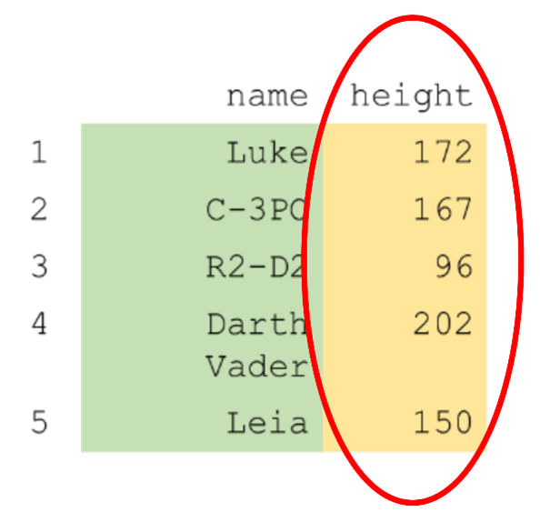
You can also use the $ add columns.
## name height evil
## 1 Luke 172 FALSE
## 2 C-3PO 167 FALSE
## 3 R2-D2 96 FALSE
## 4 Darth Vader 202 TRUE
## 5 Leia 150 FALSEThere are thus multiple ways to index the same element from a data frame. Each of the following returns the "Leia" from the above data frame.
| Indexing | What |
|---|---|
| StarWars[5, 1] | We index the element in the 5th row from the 1st column. |
| StarWars[5, “name”] | We index the element in the 5th row from the “name” column. |
| StarWars$name[5] | We index the “name” column, and from that we index the 5th element. |
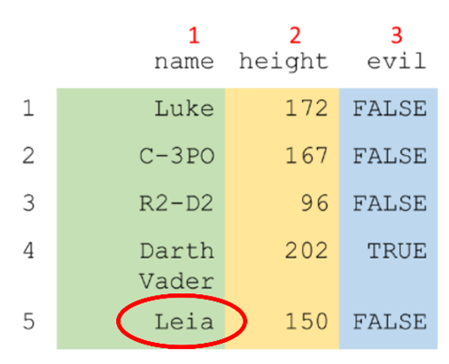
4.1.2.3 Combining Elements in a List
You can combine all types of objects in a list. Every element within an object must be of the same type, but besides that all sorts of objects can be put into a list: scalars, vectors, matrices, data frames, yes even lists can go into lists (and then you can even put lists in those lists). For example:
SWList <- list(series = "Star Wars",
movie_order = c(4, 5, 6, 1, 2, 3, 7, 8, 9),
leads = data.frame(name = c("Luke", "C-3PO", "R2-D2", "Darth Vader",
"Leia"),
height = c(172, 167, 96, 202, 150),
evil = c(FALSE, FALSE, FALSE, TRUE, FALSE)))
SWList## $series
## [1] "Star Wars"
##
## $movie_order
## [1] 4 5 6 1 2 3 7 8 9
##
## $leads
## name height evil
## 1 Luke 172 FALSE
## 2 C-3PO 167 FALSE
## 3 R2-D2 96 FALSE
## 4 Darth Vader 202 TRUE
## 5 Leia 150 FALSE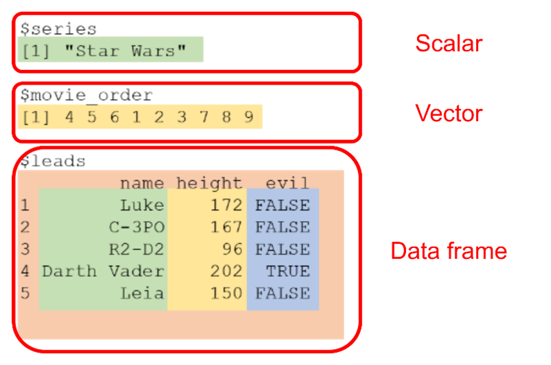
In practice, lists are often used to structure a function’s output. In other words, if you run a statistical analysis, you will get different types of output, each stored in a different item of a list.
If you do not name my objects, R will give them numbers in double square brackets.
list("Star Wars",
c(4, 5, 6, 1, 2, 3, 7, 8, 9),
data.frame(name = c("Luke", "C-3PO", "R2-D2", "Darth Vader", "Leia"),
height = c(172, 167, 96, 202, 150),
evil = c(FALSE, FALSE, FALSE, TRUE, FALSE)))## [[1]]
## [1] "Star Wars"
##
## [[2]]
## [1] 4 5 6 1 2 3 7 8 9
##
## [[3]]
## name height evil
## 1 Luke 172 FALSE
## 2 C-3PO 167 FALSE
## 3 R2-D2 96 FALSE
## 4 Darth Vader 202 TRUE
## 5 Leia 150 FALSEJust like with data frames you can use the $ to index a list if the objects in it are named.
## [1] 4 5 6 1 2 3 7 8 9By using a $ to index from a list, you are taking the object in the list you want to index out of the list and returning it as its own element unto the console. In the example above that means that we are returning to the console the vector movie_order and its contents.
If you index using square brackets [...], you will actually return a list containing only the element you indexed. Thus:
## $movie_order
## [1] 4 5 6 1 2 3 7 8 9Returns a list containing only one object, the movie_order vector. We will demonstrate the importance of this difference when we look at nested indexing in a list.
Because lists can contain elements containing other elements (which in turn can contain more elements, etc.), it is at times necessary to index an element from within a list, and then to index again within the element you have just indexed. To make this more understandable, let us return to our example and attempt to index the movie order of the 3rd movie:
First, we index the movie_order variable from the list, as shown above:
## [1] 4 5 6 1 2 3 7 8 9## [1] 4 5 6 1 2 3 7 8 9Then we add another set of [...] after this first indexing to index within this vector:
## [1] 6## [1] 6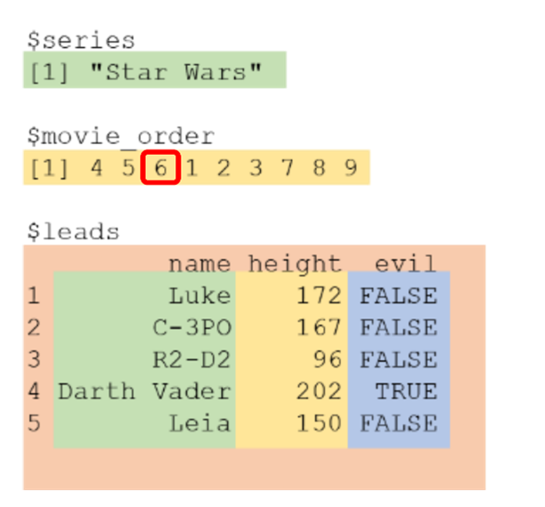
You can also do nested indexing of a data frame inside of a list in the following ways:
## [1] FALSE## [1] FALSE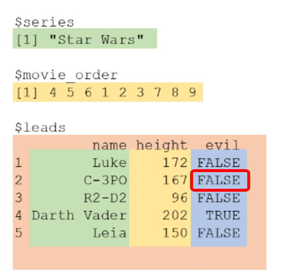
However, note here that if we indexed our movie_order vector using only single square brackets like so:
SWList[2]
We could not index from the vector, as we have only created a new list containing one element and we are now indexing a third element in that list, which it does not have. Therefore, R returns an empty list:
## $<NA>
## NULLSTART EXERCISE 2.1
4.2 Reading & Writing Data
So far, we have created all the data that we have used ourselves from scratch in R. Usually, when we are analysing data in research, we make use of datasets from an external source. For example, a .csv file exported from Qualtrics containing all the responses of your participants. We will now look at how we can load in data from external sources into R, and then save them to another file.
4.2.0.1 Build-in datasets
First, there are datasets available in R. These can be accessed just like any other object. For example, the sleep dataset can be accessed by just typing sleep:
## extra group ID
## 1 0.7 1 1
## 2 -1.6 1 2
## 3 -0.2 1 3
## 4 -1.2 1 4
## 5 -0.1 1 5
## 6 3.4 1 6
## 7 3.7 1 7
## 8 0.8 1 8
## 9 0.0 1 9
## 10 2.0 1 10
## 11 1.9 2 1
## 12 0.8 2 2
## 13 1.1 2 3
## 14 0.1 2 4
## 15 -0.1 2 5
## 16 4.4 2 6
## 17 5.5 2 7
## 18 1.6 2 8
## 19 4.6 2 9
## 20 3.4 2 10We can index this dataset like any other data frame:
## [1] 1 1 1 1 1 1 1 1 1 1 2 2 2 2 2 2 2 2 2 2
## Levels: 1 2If you want to know more about the contents of the dataset, you can type ?sleep just you would for a function.
If you want to work with this dataset further, it is advisable to store it as a separate object. This avoids similar issues as demonstrated with pi in module 1.
sleep_data <- sleep
4.2.0.2 R Packages & Package Datasets
Sometimes R packages also come with their own built-in datasets. These are loaded in the same way as the built-in R datasets. To access these datasets you do need to have the respective package installed and activated.
R packages are extensions to Rs functionality created by members of the R community. Most of the R packages you will work with are hosted on the Comprehensive R Archive Network (CRAN). Packages hosted on this archive can be installed using the following format of code:
install.packages("package_name") You will only need to install your package onto your system once.
However, each time you start an R session, you will need to activate the package using the following code:
library(package_name)
install.packages("dplyr") #only run this once
library(dplyr) #run this everytime you start an R sessionIt is generally advisable to run your install.packages() functions in the console and not store them in your script.
It is good coding standards to put ALL your library functions at the top of your R script.
Sometimes you will get the following pop-up when installing a package:
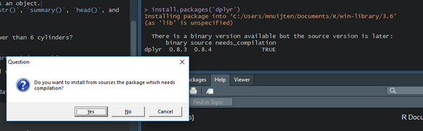
This means that there has been a recent update that is not available for your operating system yet. You have two options:
“Yes”: build the latest version from source binary. Takes longer, you need extra packages, but you’ll have the latest version.
“No”: build the previous version from binary files. A lot faster, no extra packages needed, but you won’t have the latest version (often not a problem).
4.2.0.3 Loading Data Files
You can also load in external files containing data into R. These will often be files exported from survey software like Qualtrics, or found through a data archive on the internet. Files that look like the following:
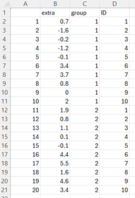
You can load these types of files in using dedicated R functions. The function you need depend on the file type.
| Function | Usage | File.Type |
|---|---|---|
| read.table() | For text files | .txt |
| read.csv() | For comma separated spread sheets | .csv |
| read.csv2() | For comma separated spread sheets, but different decimal separators (see ?read.csv2) | .csv |
| load() | For R data files | .RData |
| read_spss() | For SPSS files, from the package “foreign”. | .sav |
| read_excell() | For Excel files, from the package “readxl” | .xlsx |
| import() | From the package “rio”. Load any type of data (can be buggy) | all |
To load a file, you simply put the file path to the dataset relative to your working directory as a character string in the function name, as follows:
read.csv("data/sleep_data.csv")
To know where you have set your current working directory to, use the following code:
getwd()
To set your working directory to the location of your analysis script do:
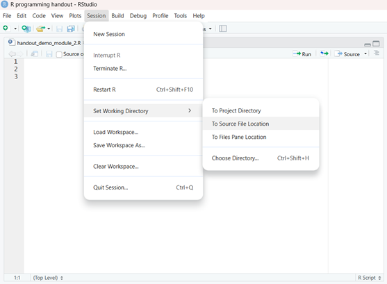
Note: if the first row in the dataset contains the variable names, you will often have to specify the header argument as: header = TRUE.
The following functions are generally preferred, because they are stable, platform independent, and the result from these functions will be consistent.
| Function | Usage | File.Type |
|---|---|---|
| read.table() | For text files | .txt |
| read.csv() | For comma separated spread sheets | .csv |
| read.csv2() | For comma separated spread sheets, but different decimal separators (see ?read.csv2) | .csv |
| load() | For R data files | .RData |
To save a data set from R to a data file, you can use the following corresponding functions:
| Function | Usage | File.Type |
|---|---|---|
| write.table() | For text files | .txt |
| write.csv() | For comma separated spread sheets | .csv |
| write.csv2() | For comma separated spread sheets, but different decimal separators (see ?write.csv2) | .csv |
| save() | For R data files | .RData |
To save/write a file, you first put the name of the data file object you want to save. Then you put the file path to the directory where you want the store the dataset as a character string in the function, as follows:
write.csv(sleep_data, "data/sleep_data.csv")
4.2.1 Inspecting & Summarizing data
The first step after loading a dataset into your statistical software should always be to check your data, to see if it looks right.
Are all variables there?
Are all rows there?
Are there any weird strings?
Are there missing values (where I didn’t expect them)?
Do my variables have the correct names?
…
4.2.1.1 Summary Functions
There are several ready-made functions that will help you quickly investigate
dim() # the dimensions of the datanrow() # the number of rows in the data frame / matrixncol() # the number of columns in the data frame / matrix
## [1] 20 3## [1] 20## [1] 3## extra group ID
## 1 0.7 1 1
## 2 -1.6 1 2
## 3 -0.2 1 3
## 4 -1.2 1 4
## 5 -0.1 1 5
## 6 3.4 1 6
## 7 3.7 1 7
## 8 0.8 1 8
## 9 0.0 1 9
## 10 2.0 1 10
## 11 1.9 2 1
## 12 0.8 2 2
## 13 1.1 2 3
## 14 0.1 2 4
## 15 -0.1 2 5
## 16 4.4 2 6
## 17 5.5 2 7
## 18 1.6 2 8
## 19 4.6 2 9
## 20 3.4 2 10To evaluate vectors, the following functions are useful:
We have already seen:
mean()median()sum()length()
To find the highest or lowest value in a vector, the following functions can be used:
max()min()
## [1] 4To find the location of the highest or lowest value in a vector, the following functions can be used:
which.max()which.min()
## [1] 3The use of other summarizing functions like View(), summary(), str(), head(), will be explored in Exercise 2.2.
4.2.1.2 Conditional Selection
So far, when we have indexed datasets or vectors, we have made use of names (e.g., llama_age[‘Zaphod’], or StarWars$height), or using numeric values to indicate locations (e.g., ages[c(1, 3, 4)]). We can also use vectors of logical (TRUE/FALSE) values for indexing.
To index with a vector of logical values the vector must be the same length as the object you want to index over.
Let’s say for example, we wanted to use logical values to index over the sleep dataset, which has 20 rows and 3 columns.
## [1] 20 3To index the second column of this dataset using logical indexing, we would use:
c(FALSE, TRUE, FALSE)
## [1] 1 1 1 1 1 1 1 1 1 1 2 2 2 2 2 2 2 2 2 2
## Levels: 1 2To index over rows would require a vector of length 20. This would take a lot of work to type out. Fortunately, we can construct logical vectors using conditional statements as in the following example:
sleep$extra > 0
This returns TRUE if at that position the value of extra is larger than 0, and FALSE otherwise.
## [1] 0.7 -1.6 -0.2 -1.2 -0.1 3.4 3.7 0.8 0.0 2.0 1.9 0.8 1.1 0.1 -0.1
## [16] 4.4 5.5 1.6 4.6 3.4## [1] TRUE FALSE FALSE FALSE FALSE TRUE TRUE TRUE FALSE TRUE TRUE TRUE
## [13] TRUE TRUE FALSE TRUE TRUE TRUE TRUE TRUETo then index with this logical vector, we do the following:
sleep[sleep$extra > 0, ]
This means: return all rows in sleep, where the value of the variable extra in the sleep dataset is larger than 0.
## extra group ID
## 1 0.7 1 1
## 6 3.4 1 6
## 7 3.7 1 7
## 8 0.8 1 8
## 10 2.0 1 10
## 11 1.9 2 1
## 12 0.8 2 2
## 13 1.1 2 3
## 14 0.1 2 4
## 16 4.4 2 6
## 17 5.5 2 7
## 18 1.6 2 8
## 19 4.6 2 9
## 20 3.4 2 10You can construct negative logical expressions by adding the ! operator in front of the statement. This will turn all “TRUEs” into “FALSEs” and vice versa:
## [1] TRUE FALSE FALSE FALSE FALSE TRUE TRUE TRUE FALSE TRUE TRUE TRUE
## [13] TRUE TRUE FALSE TRUE TRUE TRUE TRUE TRUE## [1] FALSE TRUE TRUE TRUE TRUE FALSE FALSE FALSE TRUE FALSE FALSE FALSE
## [13] FALSE FALSE TRUE FALSE FALSE FALSE FALSE FALSEYou can combine logical expressions using the OR ( | ), and AND ( & ) operators. For example:
sleep$extra > 0 & sleep$group == 1
will return true for all cases for which the value of extra is larger than 0 and were in group 1.
## [1] TRUE FALSE FALSE FALSE FALSE TRUE TRUE TRUE FALSE TRUE FALSE FALSE
## [13] FALSE FALSE FALSE FALSE FALSE FALSE FALSE FALSE## extra group ID
## 1 0.7 1 1
## 6 3.4 1 6
## 7 3.7 1 7
## 8 0.8 1 8
## 10 2.0 1 10Testing for missing valuesworks differently. In R missing values are commonly indicated by the special character NA. Because this is a special character certain standard operations will not work as expected. For instance:
sleep$extra == NA
returns
## [1] NA NA NA NA NA NA NA NA NA NA NA NA NA NA NA NA NA NA NA NATo test for missing values, we instead make use of the is.na() function.
## [1] FALSE FALSE FALSE FALSE FALSE FALSE FALSE FALSE FALSE FALSE FALSE FALSE
## [13] FALSE FALSE FALSE FALSE FALSE FALSE FALSE FALSEOr for data with NAs:
## [1] 41 36 12 18 NA 28 23 19 8 NA 7 16 11 14 18 14 34 6
## [19] 30 11 1 11 4 32 NA NA NA 23 45 115 37 NA NA NA NA NA
## [37] NA 29 NA 71 39 NA NA 23 NA NA 21 37 20 12 13 NA NA NA
## [55] NA NA NA NA NA NA NA 135 49 32 NA 64 40 77 97 97 85 NA
## [73] 10 27 NA 7 48 35 61 79 63 16 NA NA 80 108 20 52 82 50
## [91] 64 59 39 9 16 78 35 66 122 89 110 NA NA 44 28 65 NA 22
## [109] 59 23 31 44 21 9 NA 45 168 73 NA 76 118 84 85 96 78 73
## [127] 91 47 32 20 23 21 24 44 21 28 9 13 46 18 13 24 16 13
## [145] 23 36 7 14 30 NA 14 18 20## [1] FALSE FALSE FALSE FALSE TRUE FALSE FALSE FALSE FALSE TRUE FALSE FALSE
## [13] FALSE FALSE FALSE FALSE FALSE FALSE FALSE FALSE FALSE FALSE FALSE FALSE
## [25] TRUE TRUE TRUE FALSE FALSE FALSE FALSE TRUE TRUE TRUE TRUE TRUE
## [37] TRUE FALSE TRUE FALSE FALSE TRUE TRUE FALSE TRUE TRUE FALSE FALSE
## [49] FALSE FALSE FALSE TRUE TRUE TRUE TRUE TRUE TRUE TRUE TRUE TRUE
## [61] TRUE FALSE FALSE FALSE TRUE FALSE FALSE FALSE FALSE FALSE FALSE TRUE
## [73] FALSE FALSE TRUE FALSE FALSE FALSE FALSE FALSE FALSE FALSE TRUE TRUE
## [85] FALSE FALSE FALSE FALSE FALSE FALSE FALSE FALSE FALSE FALSE FALSE FALSE
## [97] FALSE FALSE FALSE FALSE FALSE TRUE TRUE FALSE FALSE FALSE TRUE FALSE
## [109] FALSE FALSE FALSE FALSE FALSE FALSE TRUE FALSE FALSE FALSE TRUE FALSE
## [121] FALSE FALSE FALSE FALSE FALSE FALSE FALSE FALSE FALSE FALSE FALSE FALSE
## [133] FALSE FALSE FALSE FALSE FALSE FALSE FALSE FALSE FALSE FALSE FALSE FALSE
## [145] FALSE FALSE FALSE FALSE FALSE TRUE FALSE FALSE FALSE## [1] 41 36 12 18 28 23 19 8 7 16 11 14 18 14 34 6 30 11
## [19] 1 11 4 32 23 45 115 37 29 71 39 23 21 37 20 12 13 135
## [37] 49 32 64 40 77 97 97 85 10 27 7 48 35 61 79 63 16 80
## [55] 108 20 52 82 50 64 59 39 9 16 78 35 66 122 89 110 44 28
## [73] 65 22 59 23 31 44 21 9 45 168 73 76 118 84 85 96 78 73
## [91] 91 47 32 20 23 21 24 44 21 28 9 13 46 18 13 24 16 13
## [109] 23 36 7 14 30 14 18 20Finally, here is a list of the common types of conditional selection operators you will be using:
>(“greater than”)<(“smaller than”)>=(“greater than or equal to”)<=(“smaller than or equal to”)==(“equal to”)!=(“not equal to”)is.na()(“is missing”)&(“AND”)|(“OR”)
START EXERCISE 2.2